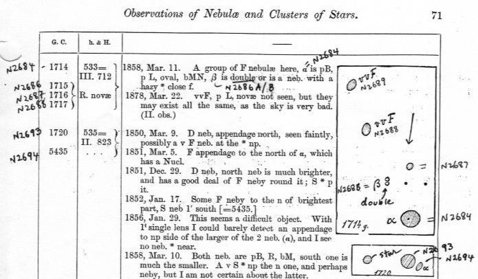
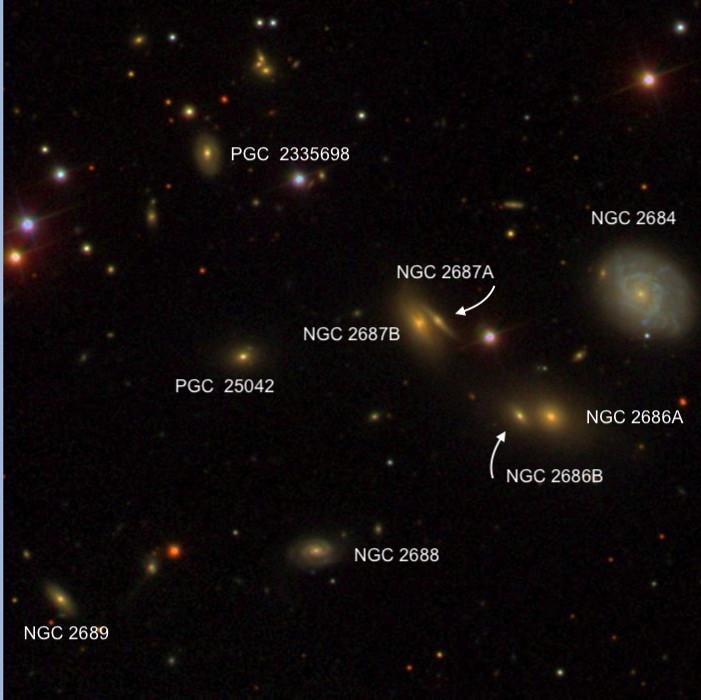

NGC 2684 photobombs a background cluster
- Name: NGC 2684 = UGC 4662 = MCG +08-16-035 = CGCG 237-024 = PGC 25024
- RA: 08h 54m 54.1s
- Dec: +49° 09' 38" (J2000)
- Constellation: Ursa Major
- Type: Sbc
- Size: 0.9' × 0.8'
- Magnitude: 13.1V, 13.8B
VV 765 background cluster: NGC 2686A, NGC 2686B, NGC 2687A, NGC 2687B (VV identified only these two pairs of double galaxies as VV 765), NGC 2688, NGC 2689, PGC 25042, LEDA 2335698
NGC 2684 is a 13th magnitude spiral discovered by William Herschel on March 9, 1788. Based on its redshift, it lies about 140 million light-years away. The SDSS image shows blue star-forming regions in the inner part of the galaxy that forms an irregular ring, but the outer portion seems to mainly consist of older stars. John Herschel also took a look at the galaxy in 1831, but neither of them recorded any fainter galaxies in the field.
That situation changed in 1858, when R.J. Mitchell, the observing assistant for Lord Rosse, took a look at the field with the 72-inch and found “A group of faint nebulae here.” Mitchell described NGC 2684, along with a nearby double galaxy NGC 2686A and NGC 2686B to the southeast. Mitchell produced a careful sketch that shows NGC 2686A/B as two nearly tangent "nebulae", along with NGC 2687, 2688 and 2689. This diagram was reproduced in the 1880 compilation of Rosse observations, and I penciled-in the NGC identifications.
So, why didn't Dreyer assign separate NGC designations to the NGC 2686 pair? Mitchell's description, "Beta is double or is a nebula with hazy star close following" left enough doubt there were two nebulae here that Dreyer stuck with a single NGC number, though included Mitchell's description. This background cluster lies at a distance of about 700 million light-years and includes a number of faint non-NGC galaxies based on similar SDSS redshifts.

Of special interest, NGC 2689 and NGC 2686B, with V magnitudes near 16.2, rank among the faintest galaxies discovered visually in the NGC. These galaxies remain challenging in an 18" telescope and require pretty good observing conditions to identify with confidence.
NGC 2686A and NGC 2686B are separated by only 16" between centers. With my 18" I sometimes saw a single round galaxy, other times it was elongated E-W, and sometimes the fainter eastern galaxy would pop into view. NGC 2687 is a more challenging pair of edge-ons separated by only 10" with a dim western component. I only noted the pair as a single glow elongated NNW-SSE, which matches the orientation of both galaxies. NGC 2688 and 2689 were both averted vision only objects in my 18" and neither could be held continuously.
If you look at Mitchell's sketch (west is to the right as indicated by his arrow) and compare it to the SDSS, it's pretty clear that the galaxy I labeled "N2689" and that he called "vvF" is LEDA 2333935. That's the identification you'll find today in NED and HyperLEDA. But SIMBAD misidentifies PGC 25042 as NGC 2689. This error actually originated in the Revised New General Catalogue (RNGC) by Sulentic and Tifft and the error is repeated in the original PGC catalog, as well as older software like Megastar, which I still use.
Mitchell missed PGC 2335698 and PGC 25042 (also cluster members), which are also just in the range of an 18" in very good conditions. There's also a tight triple system close northwest of PGC 2335698, which is quite distant at 1.5 billion light-years. I haven't seen it, but the combined glow of all three should bring it into the range of a 20".

As always,
"Give it a go and let us know!
Good luck and great viewing!"